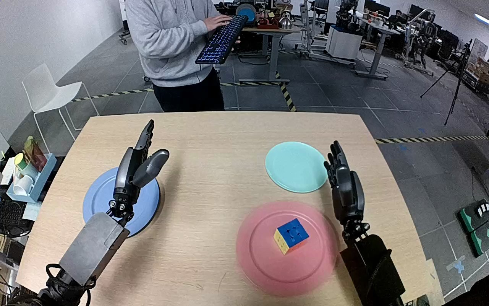

NVIDIA GR1 · 83
Video 83

Visual review action_review.json
{
"prompt_protocol": "humanoid_action_v1",
"prompt_provenance": "visually_authored_from_video_and_initial_frame",
"reviewed_contact_sheets": [
"sheet_001.jpg"
],
"inspected_frame_stride": 2,
"inspected_sampled_frame_count": 60,
"initial_scene": "Forward-facing view from between the robot arms over a tabletop. A multicolored cube with blue upper face rests on a pink plate in front of the right hand; an empty small cyan plate is farther forward. The left hand is open above an empty blue plate.",
"observed_sequence": [
{
"start_frame": 0,
"end_frame": 18,
"observation": "Both hands begin open. The right hand moves toward the pink plate while the left hand stays raised over the blue plate.",
"confidence": "high"
},
{
"start_frame": 19,
"end_frame": 62,
"observation": "The right hand rotates and lowers around the cube on the pink plate, bringing its thumb and opposed fingers to the cube sides.",
"confidence": "high"
},
{
"start_frame": 63,
"end_frame": 80,
"observation": "The right fingers close around the cube and secure it; the cube remains near the pink plate during closure.",
"confidence": "high"
},
{
"start_frame": 81,
"end_frame": 96,
"observation": "The right hand lifts the cube clear of the pink plate and carries it forward over the cyan plate. Native frames 84 and 92 show the carried cube and the now empty pink plate.",
"confidence": "high"
},
{
"start_frame": 97,
"end_frame": 111,
"observation": "The right hand lowers the still-grasped cube onto the near-right area of the cyan plate.",
"confidence": "high"
},
{
"start_frame": 112,
"end_frame": 119,
"observation": "The right thumb and fingers open, releasing the cube on the cyan plate. The open hand rises slightly while the cube remains on the plate. The left hand remains uninvolved.",
"confidence": "high"
}
],
"arm_hand_roles": {
"right": "Sole manipulating hand: grasps, lifts, carries and lowers the cube, then opens to release it on the cyan plate.",
"left": "Open, largely stationary above the blue plate; does not touch the cube or stabilize either plate.",
"coordination": "Single-hand manipulation; no hand-to-hand transfer or human interaction with the object."
},
"anatomical_side_evidence": "The camera looks forward from between the two arms: the active forearm extends from the lower-right robot-side origin and the inactive forearm from the lower-left. In the initial PNG their opposed thumb positions face inward toward the central workspace, confirming the active hand is anatomical right in this robot-facing view. The torso/shoulder attachments are outside the view, but bilateral forearm continuation and thumb orientation provide anatomical evidence independent of the caption.",
"terminal_state": "The cube rests on the cyan plate with its blue face upward. The right hand is visibly open and slightly raised beside/above it; the pink plate is empty. The left hand remains open above the blue plate.",
"uncertainties": [
"Exact fingertip contact and the first instant of cube-to-plate contact are partially occluded by the right palm; native frames 114, 116 and 119 show the opened hand and cube remaining on the cyan plate."
],
"annotation_discrepancies": [],
"evidence_frame_indices": [
0,
36,
72,
84,
92,
110,
114,
116,
119
],
"selected_execution_status": "success",
"inspection_coverage": {
"contact_sheets": "All 60 every-second-frame samples from source frames 0 through 118 viewed in sheet_001.jpg.",
"initial_png": "Source initial PNG viewed at native 1280x800.",
"native_transition_and_final_frames": [
36,
72,
84,
92,
110,
114,
116,
119
]
},
"video_id": "83",
"dataset": "NVIDIA_GR1_100",
"dedicated_review_agent": "review_gr1_83",
"review_source_video": "NVIDIA_GR1_100/83/original/original.mp4",
"source_frame_count": 120,
"source_fps": 20.0,
"native_detail_frames": [
0,
36,
72,
84,
92,
110,
114,
116,
119
],
"world_model_prompt": "The robot uses its right hand to close its fingers around the Rubik's cube on the pink plate and lift it clear. It carries the cube forward to the small cyan plate, lowers it onto the plate, and opens its hand, leaving the cube there as the hand lifts slightly away. Keep the camera fixed; preserve robot geometry, physically valid joint motion, and normal gripper opening and closing.",
"original_task_instruction": "Use the right hand to pick up rubik's cube from from the pink plate on the right side of the table to to the small cyan plate on the right side of the table above the pink plate.",
"selected_segment": {
"start_frame": 0,
"end_frame_exclusive": 120,
"reason": "Complete original single-task reference; no cropping or trimming requested."
},
"source_video_sha256": "a5bec2750265d6f5f394a8a0151ea9c84cd162235bdb9ddee86dea9e6b491278",
"review_completed_at": "2026-10-13T18:35:45.497183+00:00"
}